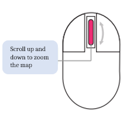
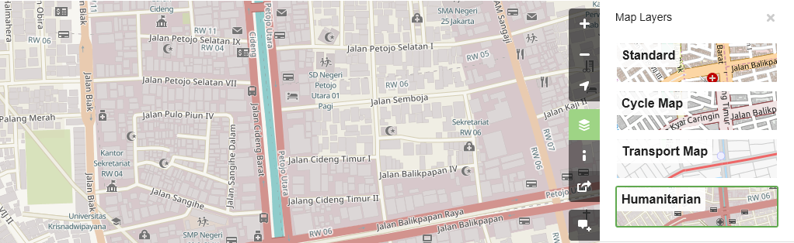
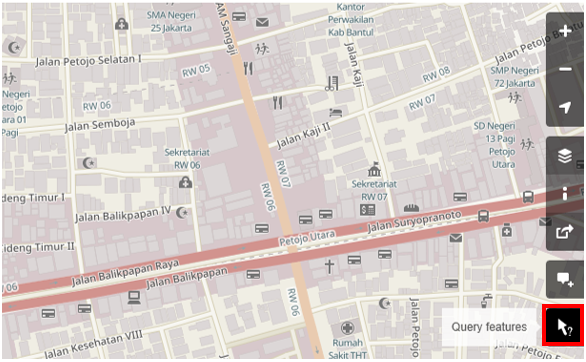
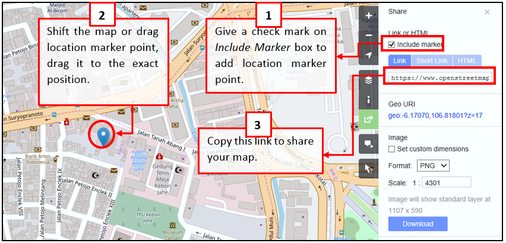
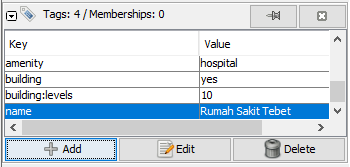

2.1 Introduction to OpenStreetMap
This section provides:
- An overview of OpenStreetMap, including presentation slides
- Step-by-step instructions for creating OpenStreetMap accounts
- Step-by-step instructions for using and navigating OSM
- Considerations for training large groups
The following materials are designed to assist project managers and others leading trainings and workshops. If you are an individual interested in learning how to map with OpenStreetMap, please visit LearnOSM.org.
Overview
OpenStreetMap is a collaborative project to create a free editable world map and is at the core of HOT's mapping activities. You are free to use it for any purpose as long as you credit OSM and its contributors.

The power of OpenStreetMap is that it empowers anyone, anywhere in the world to add information to a collective map and use the data for any purpose. You can think of OSM as the “Wikipedia of maps” – it is an online database and global community of over 5 million registered users. This community collaborates to build a free and open map of the world to which anyone can contribute and which anyone can use in their own context. All that is needed to contribute to OSM is an internet connection and email address.
OpenStreetMap can, and has, been used for a wide variety of purposes - from disaster response to commercial use. The first organized use of OSM in disaster response was following the 2010 Haiti Earthquake. As high-resolution imagery of the affected area was made available to the public, over 600 individuals from the global OSM community began digitizing the imagery and tracing roads and other infrastructure. They made what quickly became the most detailed map of Port-au-Prince in existence, which was then used by search and rescue teams to help route supplies around the devastated capital and to coordinate many other aspects of the response and reconstruction effort.
Resources and Training Materials
This section features a selection of resources targeted at project managers, trainers, or even self-learners on the topic(s) outlined above.
The following presentation(s) can be used to lead a training or workshop.
 The following section is designed to serve as self-paced material that can be used both during trainings, and by self-guided learners.
The following section is designed to serve as self-paced material that can be used both during trainings, and by self-guided learners.
Opening OSM Accounts
With OpenStreetMap (OSM) at the core of mapping activities, it is critical that all team members and participants have activated OSM accounts. This will be necessary before using many mapping tools such as HOT Tasking Manager, JOSM, and HOT Export Tool. This section covers how to:
- Create an OpenStreetMap Account
Skills and Technology Needed
- Computer
- Activated email account
- Internet connection
Creating an OSM Account
To get started, you will need to create an account on www.openstreetmap.org. Please use the “Sign Up” tab in the top right corner to begin.

Please fill in all the fields in the form. We recommend using an email you have easy access to e.g. your work email, as you will receive a confirmation email to verify your account. You will not receive any spam/marketing emails. Click the blue “Sign Up” button when finished.
Note : If a problem occurs, a problem message will appear. Make sure that the email you entered is the same as in the first two boxes and your password. If the box for the user name is red then someone else has already used the name and you have to look for another name.

Next, please read and accept the contributor terms and agreements by selecting where you are based (France, Germany, or the Rest of the World), and clicking the blue “Agree” button on the bottom of your screen.

To activate your account, please now check your email and click on the link provided.

On the OpenStreetMap page, click Log In in the upper right corner. Enter your OpenStreetMap username and password then press Enter. You should now be logged in and you will see your username on the top right of the OpenStreetMap site.
Considerations for signing up large numbers of individuals
- Prior to beginning the OSM registration process, all individuals signing up for OSM accounts will need to have an existing and accessible email account. If registering a large group of individuals at one time, we recommend asking the group if they have accessible email accounts. When planning mapathons and trainings in areas where regular email use may be low, we also recommend planning for time in assisting individuals with setting up email accounts.
- Consider internet connectivity and capacity prior to registering large numbers of individuals for OSM accounts. Having individuals taking turns to register or running registration simultaneous to other activities can reduce the load on a slow internet connection.
- It is crucial that usernames and passwords are remembered by participants so that they can access other tools that require OSM accounts to log-in. We recommend encouraging participants to find a way of safely storing this information for future reference.
Using OpenStreetMap
After creating an OpenStreetMap account it is important to understand basic skills in navigating OpenStreetMap. This section covers how to:
- Operate and navigate the OpenStreetMap website
- See object information in OpenStreetMap
- Create share link in OpenStreetMap
- Save images from OpenStreetMap
- Understand the basic concept of attributes in OpenStreetMap
- Understand history in OpenStreetMap
Navigate the map
In the main view of the OpenStreetMap website, you will see a large map in it. You must be able to navigate the map so you can go to a location that you want. Here are the ways to navigate the map on OpenStreetMap:
- Use the left mouse to drag the map view. Left-click on your mouse, then hold and drag the map to the location that you want. If you don't have a mouse, you can press and hold the right touchpad and then move the cursor.

- Use (+) and (-) button in the upper right corner of the map to zoom in and zoom out the map view. You also can use your mouse scroll-wheel to zoom your map. Scroll your mouse up to zoom in, while scroll down to zoom out.

- To search the location based on the name, type the location name on the Search box in the upper left side on the screen. You can type it in the search column, then press Enter or click Go. After that a Search Results box will appear below the search column, then you can choose and click on the search. The map will automatically move to the location you chose.

- To display your current location, you can go to the map panel to the right of the map and click Show My Location button. Then, the map will automatically display your current location point (blue dot). Make sure to enable the GPS on your laptop or computer to allow OSM to get your current location.

Change different style options for the map
OpenStreetMap contains geographic data from all over the world. Although stored in one database, the data can be displayed in several styles. The steps to change style map in OSM are as follows:
- Click Layers button in the right panel on the map.

OSM has four types of layers with different functions, namely:
- Standard: This layer shows all the objects on the OSM map.

- Cycle Map : This layer emphasizes cycling routes and pedestrian roads.

- Transport Map: This layer emphasizes transportation routes on the map such as highways and bus stop.

- Humanitarian: This layer emphasizes important objects or amenities on the map such as school, hospital, etc.

View object information in OpenStreetMap
In the OpenStreetMap page, besides see the current location and navigate the map, you also can see the feature information using Query Features. The steps to use Query Features are below:
- Click on Query Features button on the panel in the right. After you clicked it, you should see the question mark on your cursor. This indicates that the query features function is activated.

-
Now you can choose an object or location that you want to identify. For this example, we click on a governmental office building (Dinas Kesehatan) in Jakarta.
-
You should see a box appears in left corner that displays Nearby Features and Enclosing Features options. Nearby Features shows the description of any object that is closest to the location of your chosen point, while Enclosing features shows all the object information that have a close range location with your chosen point. Try to click one feature in the Nearby Features, click Governmental office Dinas Kesehatan for this example.

- After you clicked it, the information detail about Dinas Kesehatan building will appear in the left box. The information displayed is a tag or object attribute regarding general information objects such as object names, addresses, building levels, and others.

Share map locations in OpenStreetMap
You can share links of your OpenStreetMap maps to others for various purposes, such as sharing the location of your current position with your colleagues and so on. To be able to share OpenStreetMap maps, the steps are as follows:
- Click the Share button on the right panel, then the Share column will appear.
- Check the Include marker to add the location marker point. You can move or drag the marker point to the desired location. Just click and hold the location marker then you drag to the desired location point. Another way is to shift the map so that the location marker is in the position you want.

- Once the marker position has fixed, you can copy the link in the Link box and share the link according to your needs. You can also copy a shorter version of the link in the Short Link box or copy the HTML code in the HTML box.

Export map as an image
Besides changing the layer map, you also can export the map as an image and choose the various format file such as .png, .jpg, .svg, and .pdf. The steps to export the map are as follows:
- Click on the Share icon in the right of your map. Then the Share column will appear on the right side of your screen.

- After that, specify the area on the map that you want to export as an image. Give a check mark on the Set custom dimensions box in the Image section, then adjust the size of the box or adjust the scale in the Scale section.
Note : You can only export map as image if you set the Standard Layer view. If your map does not use the Standard Layer, you need to change it first on the Layers menu.
- You can choose the format of the export image in the Format dropdown menu. After that, click Download button to download the image and save the image to your folder location.

View the editing history in OpenStreetMap
When you edit objects or make changes to OpenStreetMap, you can see the editing history of objects in that area. The steps to see editing history are as follows:
- You can see the information by clicking on the History menu button on the top left of the map.
- After that, the Changesets column will appear at the bottom of the Search box and orange boxes will appear on the map that indicates which areas have just been edited. Changeset is a version of every change uploaded by OSM users. The information that we can see in the Changesets column is as follows:
- Changeset comment. It is recommended that you write the short comment when uploading changes or changeset. Comments can contain information about any changes that you made or specific hashtags.
- Upload time information.
- OSM username.
- Changeset number. This number is a unique number as the changeset identity.

- You can click one of the changeset on the changeset list or you can immediately select the orange box on the map. After you select one of the changeset, you will get details about the changeset.

Basic concept of OpenStreetMap attributes
-
The attribute concept on object
When you draw an object as a point, line, or polygon in OSM, you still need to add information about the object such as object name, address, or other supporting information. This information will help other users when using OSM data for various purposes. Information provided by users on OSM objects is called an attribute or tag.
An attribute/tag is like a label that you can place on an object. For example, if you draw a square, this is only a square without any object information. But you can add attributes to describe that object, for example you draw a square that is is a building; the name of the building is “Tebet Hospital”; 10 level building.
-
Components in OpenStreetMap attribute data
You can add as many attributes / tags as you want to an object. Attributes are stored as a pair of text, named Key and Value. Key is general information that explains the function of an object. In one key, it can consist of many values. For example schools, mosques, and hospitals have key=amenities (important facilities). Although the three objects have different types of functions, but all three objects have the same key. Whereas Value is information that more specifically explains the type of an object. Because this value describes specific information about an object, so that one type of value can only describes the type of the object itself. Not the same as a key that can explain general information about the object. In OpenStreetMap, an attribute is added by formatting a key-value pair that represents physical features on the ground, for example:

In the example above, there are four kinds of key & value attributes, including object amenities for hospital (amenity = hospital), building objects (building = yes), building level 10 (building:levels = 10) and object name Tebet Hospital’ (name = Tebet Hospital).
Additional Resources